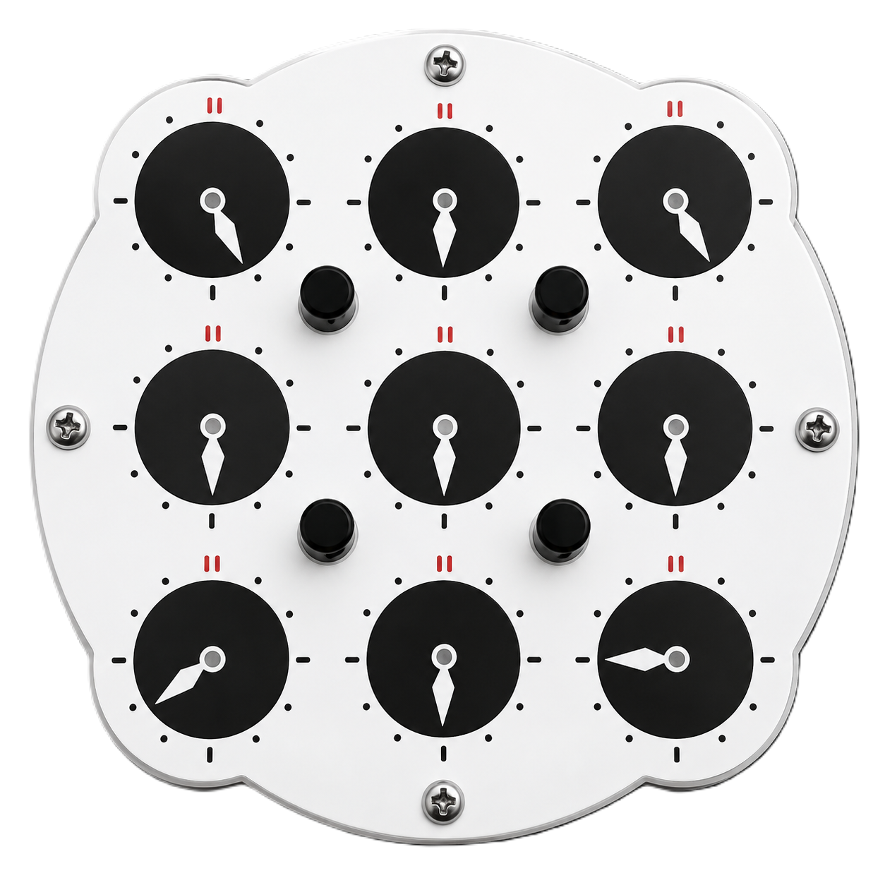
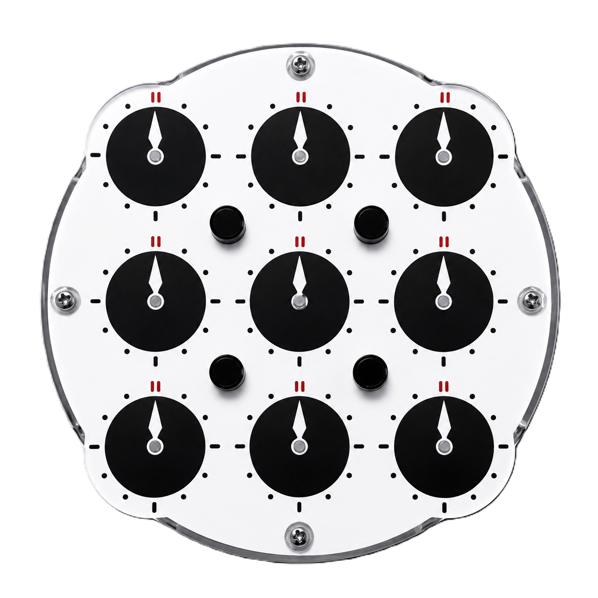

Step 1 — Solve Cross #1 (First Side)
Start on side 1 by matching the center clock to each cross clock one by one:
- Match Center to Edge 1
- Match Block to Edge 2
- Match Block to Edge 3 & 4
- Point Cross Up
Put only 1 pin up (away from the target edge) and turn its dial until the center clock matches the target edge clock.
Raise the pin for the solved edge and turn the dial to rotate your solved block into alignment with the next edge clock.
Repeat this process—adding UP pins to grow your solved block—until all 5 cross clocks match.

Push all 4 pins UP and turn any dial until all cross clocks point straight up to 12 o'clock.
Step 2 — Solve Cross #2 (Second Side)
Flip the puzzle over to the second side.
Crucial Rule: Never turn a dial whose adjacent pin is DOWN. Doing so will mess up the clocks on the opposite side!
Match the center clock to edge 1, then edge 2, 3, and 4.
Note: Do not turn all cross clocks to 12 o'clock yet on this side.
Step 3 — Solve All 4 Corners
Solving the corners on this side automatically solves the corners on the back side simultaneously:
- Target Corner 1
- Target Corners 2, 3, & 4
- Finish the Solve
Push DOWN only the pin closest to the target corner (keep the other 3 pins UP). Turn any dial near an UP pin until your cross block matches that corner.
Repeat this process for each remaining corner by putting its pin DOWN and turning an active dial to match.
Put all 4 pins UP and turn any dial until all clocks point straight up to 12 o'clock [03:09]. Flip the puzzle over—both sides will now be fully solved!
